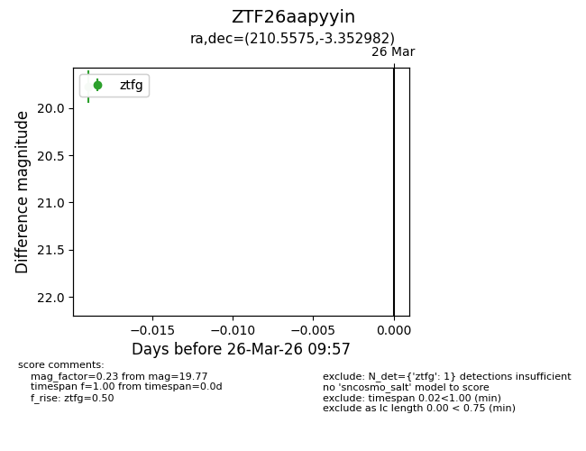
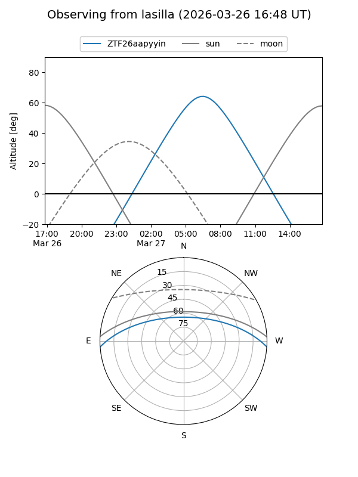
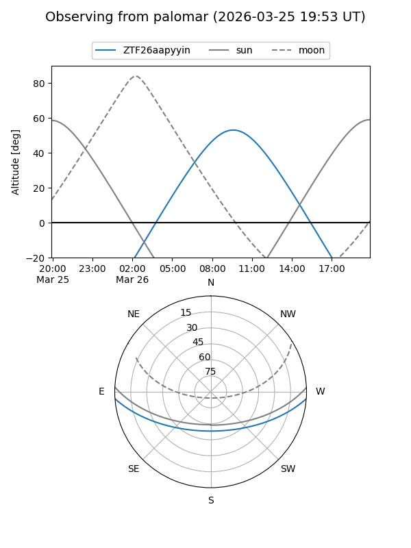

ZTF26aapyyin
Target ZTF26aapyyin at 2026-03-26 09:59
Aliases and brokers:
FINK: link
Lasair: link
ALeRCE: link
alt names
ZTF26aapyyin (ztf,fink_ztf)
Coordinates:
equatorial (ra, dec) = 210.5575,-3.35298
equatorial (HMS+DMS) = 14:02:13.79,-03:21:10.73
galactic (l, b) = (334.9296,+55.05939)
Flags:
Photometry:
last ztfg=19.77
1 ztfg detections
Lightcurve

Visibility


Additional plots